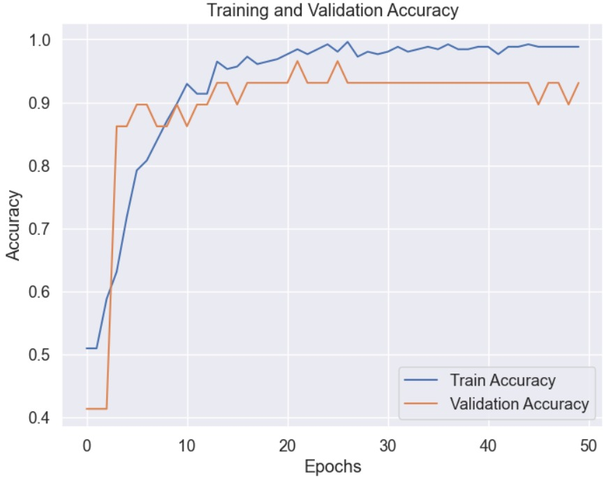
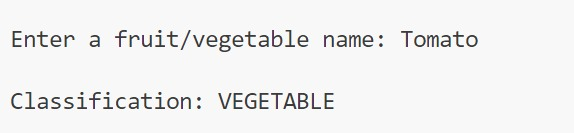
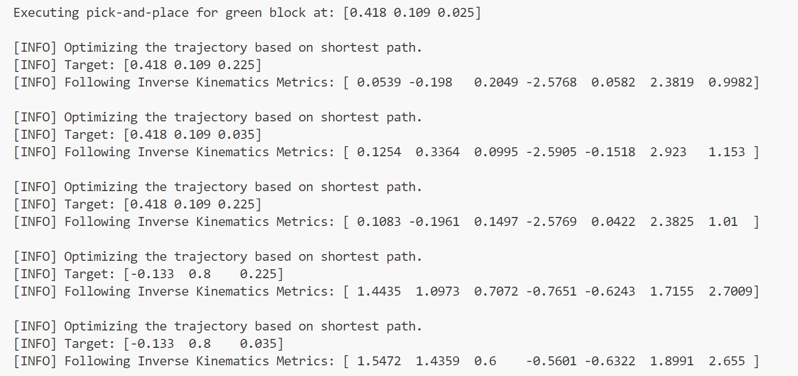
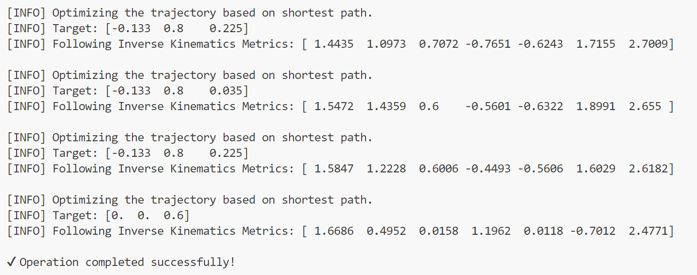
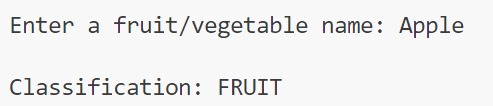
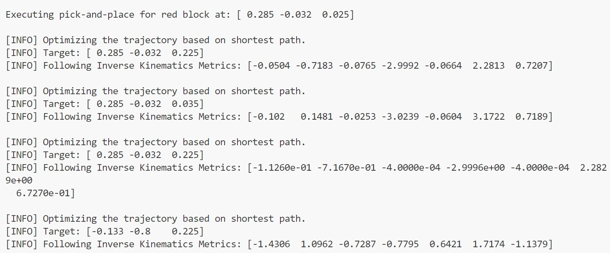
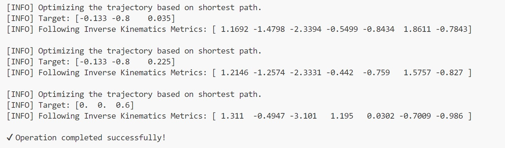

CNN-Based Fruit and Vegetable Sorting with Robotic Arm in PyBullet
AMRITA VISHWA VIDHYAPEETHAM
22AIE213: Introduction to AI in Robotics
22MAT220: Mathematics for Computing - 4
Group-16 members :
A Deepthi - CB.SC.U4AIE23007
A Sai Sanjana - CB.SC.U4AIE23013
G Prakash - CB.SC.U4AIE23014
T.Rohith Balaji - CB.SC.U4AIE23069
Table of Contents
Abstract
Table of Contents
Introduction
Literature Review / Related Work
Methodology & Implementation
Technologies Used
Results and Discussion
Demo of Simulation
Conclusion and Future Work
References
Abstract
This project presents a smart robotic sorting system that autonomously classifies and sorts fruits and vegetables using computer vision and simulation-based robotic control. A CNN model classifies the object based on its name, and a PyBullet-simulated robotic arm with a gripper executes the corresponding pick-and-place operation. The system eliminates manual sorting, improving speed, accuracy, and scalability in agricultural processes.
This project involves designing and implementing a robotic arm capable of sorting fruits and vegetables based on type. The robotic arm uses a combination of sensors and text processing to automate the sorting process, improving efficiency and reducing manual labor in agricultural and retail sectors.
In modern agriculture and food industries, efficient sorting of fruits and vegetables is crucial for quality control and operational productivity. Manual sorting is often labor-intensive, inconsistent, and time-consuming.
This project presents the design and development of a low-cost, semi-automated robotic arm that can sort fruits and vegetables based on visual features such as color, shape, and size. The system integrates text modeule for acquisition, OpenCV for real-time text processing, and a controlled robotic arm for precise item manipulation.
The sorting decisions are based on predefined thresholds or classifiers that map specific features to categories.
The simulation is developed using Pybullet and the physical prototype is built with 3D printed parts. This project demonstrates how robotic automation can be applied to agricultural post-harvest operations, ensuring faster, more reliable sorting with minimal human intervention.
Future enhancements aim to integrate machine learning models and conveyor belt systems to enable continuous, large-scale sorting.
Introduction
In the rapidly evolving landscape of automation and intelligent systems, the fusion of machine learning with robotics has unlocked powerful capabilities that were once limited to human intervention. One such area gaining significant attention is autonomous object detection, classification, and manipulation — particularly in environments like agriculture, food processing, and logistics.
This project presents a smart robotic sorting system that leverages computer vision and reinforcement-based robotic control in a simulated environment. The primary aim is to design a framework where a robot can classify various fruits and vegetables using a Convolutional Neural Network (CNN), respond to user inputs, and autonomously execute pick-and-place operations using a high-fidelity simulation environment like Pybullet.
The system simulates a real-world scenario where:
Image-based object classification using a trained CNN model.
Real-time object spawning and movement simulation in PyBullet.
User input to select an item name, triggering autonomous object identification and sorting.
Smooth trajectory planning using Bézier curves and inverse kinematics.
Realistic object interaction using a simulated gripper.
To enable such intelligent behavior, several key components are integrated:
A deep learning model for text-based object classification, trained on labeled datasets of fruits and vegetables.
A robot simulation environment using Pybullet that enables dynamic modeling of the robotic arm, gripper mechanics, and scene interaction.
The choice of simulation before real-world deployment allows for safe testing, iteration, and performance evaluation without hardware constraints. This modular and scalable setup can be extended to real-time robotic systems, paving the way for intelligent warehouse systems, automated quality control in food industries, and robotic assistants in smart agriculture.
Moreover, this project encourages human-robot collaboration by including a user-guided selection process, making the system more interpretable and responsive rather than fully black-boxed automation. The interactive approach also enhances usability in semi-autonomous environments where human supervision or override may be essential.
In summary , Robotic systems integrated with AI models are revolutionizing industries by automating complex tasks like object detection, classification, and manipulation. In agriculture and food logistics, sorting fruits and vegetables is vital for quality control. This project leverages PyBullet simulation and a CNN-based classifier to simulate an intelligent robotic arm system that can pick and place items into designated trays based on their classification.
Literature Review / Related Work
Several studies have focused on using robotic systems for agricultural automation. Past works include robotic pickers and conveyors equipped with machine learning to detect ripeness. Our system builds on this by integrating a sorting mechanism at the end-effector stage, using simpler components for cost-efficiency and reliability in small-scale industries.
Vision-based Robotic Sorting: Research has demonstrated the success of CNNs in classifying agricultural products. For instance, systems such as YOLO and ResNet have been used for fruit detection and sorting.
Grasping and Manipulation: Robotic pick-and-place tasks are often implemented using inverse kinematics and trajectory optimization. Libraries like PyBullet and CoppeliaSim provide flexible environments for simulating such actions.
Self-supervised Learning in Robotics: Techniques like Time Convolutional Networks (TCNs) and LSTMs have enabled robots to understand patterns in sensory data and improve over time through simulation.
Libraries such as PyBullet have made dynamic simulation environments accessible for academic and prototype development. Most real-world applications require expensive sensors or specialized hardware; this simulation bridges that gap using low-cost alternatives and open-source tools.
Methodology & Implementation: Robotic Pick-and-Place System
The system follows a structured sequence of six major stages for identifying, classifying, and sorting fruits and vegetables in a simulated environment:
Mixed Items on a Tray:The workspace contains a tray with a mix of items represented by colored blocks—red blocks for fruits and green blocks for vegetables.
User Input: The user provides the name of a fruit or vegetable through the console, initiating the object recognition process.
Text Classification using- CNN: A trained Convolutional Neural Network (CNN) model is used to classify the user's input as either a fruit or a vegetable based on the text provided.
Object Detection:the robotic arm identifies the nearest block of the corresponding color (red for fruits, green for vegetables) and uses its gripper to pick it up,Inverse kinematics is applied to calculate the arm’s joint positions for accurate movement.
Pick Phase: The robotic arm moves above the target object using a smooth Bézier curve trajectory, lowers itself, activates the gripper to grasp the object, and lifts it safely out of the tray.
Place Phase: Based on the object type, the robot navigates to the appropriate basket (fruit or vegetable) and places the object inside by opening the gripper, again using smooth and collision-free movement planning.
Reset: After successful placement,once all are sorted task completion message is added the robotic arm returns to its home position to prepare for the next cycle, ensuring readiness for continuous operation or further user interaction.
1. Tokenization
Character Extraction: Individual characters are extracted from each word.
Character-to-Index Mapping:Keras' Tokenizer is used to provide each character a distinct integer.
Fixed-Length Padding:For consistent CNN input, all sequences are padded with zeros to the same length (max_length).
2. Embedding Layer
Each character, represented as an integer index, is converted into a dense vector of fixed size
These vectors have trainable weights, allowing the model to learn and capture character relationships.
T: Sequence length d: Embedding dimension
Convolutional Neural Network (CNN)
1D Convolution (Conv1D)
A filter (kernel) moves across the input sequence to apply the convolution operation.
At each step, it calculates the dot product between the filter and the corresponding input section.
Y[i]: Output value at position i X[i+j]: Input at position i+j K[j]: Filter value at position j b: Bias term F: Filter size of the kernel
ReLU (Rectified Linear Unit)
ReLU (Rectified Linear Unit) is a widely used activation function that introduces non-linearity into deep learning models.
It works by replacing all negative input values with zero, while keeping positive values unchanged.
This simple yet effective transformation allows neural networks to model complex patterns and relationships.
ReLU also helps in reducing the chances of the vanishing gradient problem during training.
Max Pooling
it is a down sampling technique used in convolutional neural networks (CNNs) to reduce the size of feature maps while preserving the most important information. Instead of learning parameters, max pooling just picks the maximum value from a feature map.
Fully Connected (Dense) Layer
Each neuron connects to all previous neurons, learning complex patterns,relationships and making final predictions.
Sigmoid
Any real number can be changed into a value between 0 and 1. It is frequently used to express probabilities in the output layer of binary classification models.
Forward Kinematics
Forward kinematics is used to compute the exact position and orientation of a robot's end-effector based on its joint angles.
It applies a series of transformation matrices derived from Denavit-Hartenberg (DH) parameters to model the robot’s structure.
By multiplying these matrices from the base to the end-effector, the final pose of the end-effector in 3D space is obtained.
This process is essential for determining how the robot will move given specific joint configurations.
The total transformation from base to end-effector is obtained by multiplying all joint transformations.
Calculate the Error
it calculates the difference between the target position and current end-effector position. The error (e) tells the robot how far and in which direction it needs to move to reach the target.
Inverse Kinematics
Inverse kinematics minimizes the difference between the current and desired position (pose) of the robot’s end-effector.
Minimizes pose error using Damped Least Squares (DLS). This avoids instability and singularities.
Here, λ is a small damping constant to avoid instability ;The damping constant λ is introduced to prevent numerical instability, especially when the Jacobian matrix is close to singular.
This approach ensures smoother and more stable joint updates, making it suitable for complex robotic movements.
Repeat until pose error is below the threshold or iteration limit is reached.
Bezier Curves (Trajectory Smooth Movement)
Bezier curves are used to generate smooth and continuous trajectories between two positions for robotic arm movement.
By calculating intermediate control points, the path ensures gradual transitions without abrupt changes in direction or speed.
This results in more natural and stable motion, reducing mechanical stress on the robot and improving precision.
Such smooth trajectories are crucial in tasks requiring accuracy and fluidity, like picking or placing objects.
P0: Start point P1: Intermediate control point 1 P2: Intermediate control point 2 P3: End point T: Curve parameter
Block Optimization
To optimize efficiency, the robotic arm minimizes its total travel distance during operations.
It does this by selecting the closest unpicked block at each step using Euclidean distance, also known as the L2 norm.
This distance is calculated between the current arm position and all available targets, choosing the one with the shortest path.
By continuously selecting the nearest block, the robot reduces movement time and energy consumption, enhancing overall performance.
Technologies Used
TensorFlow/Keras – For building and loading the CNN classification model
PyBullet – For robot and object simulation with physics,pubullet data also comes under this
URDF – For 3D modeling of robot and environment elements
Python/numpy – Primary scripting language for logic and controland also numpy library used
Results and Discussion
The robotic arm successfully demonstrated classification-based sorting in a simulated environment. The pick-and-place action was reliable and precise. User input correctly mapped to item class, and the robot moved accordingly to pick and place the item in the right tray. Challenges involved positioning accuracy and tuning the gripper constraints for realistic grasping.
CNN Text Classification Evaluation Parameters :
Figure 1: model evaluation
Figure 2: Confusion Matrix showing actual over predicted

Figure 3: Trainng and Validation accuracy over epochs
Figure 4: Classification Report
Output of Simulation
User Interaction: The system waits for the user to select an object (based on CNN classification), which then triggers the sorting task.
Simulation: The full simulation is executed in Pybullet. Objects are randomly placed in the mixed basket, and the robot, upon user command, highlights the selected object and places it into the right tray.
The simulation shows the following sequence:
User enters an object name (e.g., "apple").
The CNN classifies it as a fruit.
The robotic arm locates a red block (representing a fruit).
It moves to pick the block, grips it, and lifts it.
The robot places the block in the fruit tray.
System Flow Diagram
┌──────────────────────┐
│ User Enters Name │
└─────────┬────────────┘
↓
┌──────────────────────┐
│ CNN Classifies Input │
└─────────┬────────────┘
↓
┌──────────────────────┐
│ Identify Matching Obj│
└─────────┬────────────┘
↓
┌──────────────────────┐
│ Move to Object Loc │
└─────────┬────────────┘
↓
┌──────────────────────┐
│ Grip & Pick │
└─────────┬────────────┘
↓
┌──────────────────────┐
│ Move to Tray & Drop │
└──────────────────────┘
Output for vegetable :

User input given as tomato

Data output showing target coordinates and corresponding inverse kinematics metrics during the trajectory planning process

Data output showing target coordinates and corresponding inverse kinematics metrics during the trajectory planning process
Simulation Output 1
Output for fruit :

user input given as apple

Data output showing target coordinates and corresponding inverse kinematics metrics during the trajectory planning process

Data output showing target coordinates and corresponding inverse kinematics metrics during the trajectory planning process
Simulation Output 2
Combined fruit vegetable :
Simulation Output
Hardware prototype for pick and place
Description : The same hardware prototype using a real robot arm and camera can mirror the same logic for this fruits and vegetables sorting in real-time application.
The hardware implementation of the pick-and-place system replicates the simulation environment in a real-world setup using a robotic arm.The primary objective is to perform the same sorting logic—used in simulation—on actual physical objects such as fruits and vegetables.This hardware prototype demonstrates real-time object manipulation and sorting, mirroring the logic used in the PyBullet simulation.
Conclusion and Future Work
Conclusion: This project successfully demonstrates a CNN-integrated robotic sorting system within a simulated environment. The combination of visual recognition, user-driven interaction, and motion planning results in a robust framework for smart automation.
Smooth and accurate movement of robotic arm to pick and place the correct object is done using Bezier curve.
The Robotic Arm picks the closest block, choosing red for fruits and green for vegetables, making the process efficient and reducing total distance in simulation.
The robotic arm moves with precision, using inverse kinematics (IK) for grasping the object, and forward kinematics (FK) to ensure each movement is executed correctly and smoothly.
Also implemented pick and place of Color cubes using robotic arm in hardware.
Future Work:
Integration of CNN with the robotic arm simulation setup , implementing input capture; object representation in the simulation.
This will allow the arm to identify and sort objects within the virtual environment based on the CNN's classification.
The system will be expanded to hardware by attaching a camera to the robotic arm for real-time object capture.
The CNN will classify the objects and guide the arm to sort them physically into the correct categories.
Implementation of Trajectory optimisation which will refine the arm's movement paths for smoother and more efficient motion.
References
Smith, J., & Brown, A. (2021). Agricultural Robotics: A Survey. Journal of Robotics Research.
Kumar, R. et al. (2020). Low-Cost Robotic Arms in Farm Sorting. IEEE Transactions on Automation.
Redmon, J., & Farhadi, A. (2018). YOLOv3: An Incremental Improvement.
Simonyan, K., & Zisserman, A. (2014). Very Deep Convolutional Networks for Large-Scale Image Recognition (VGGNet).